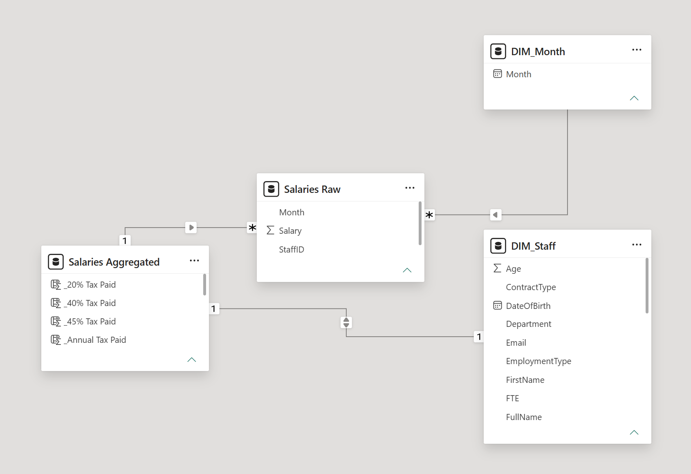
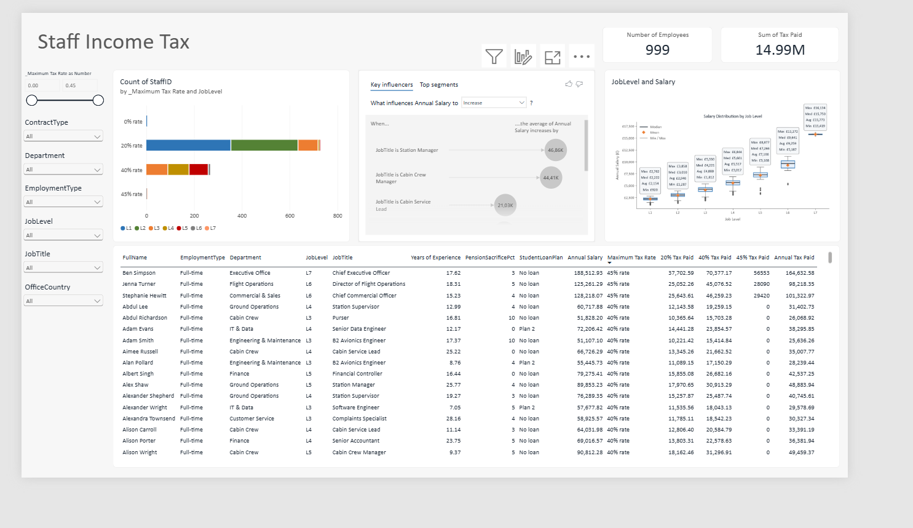
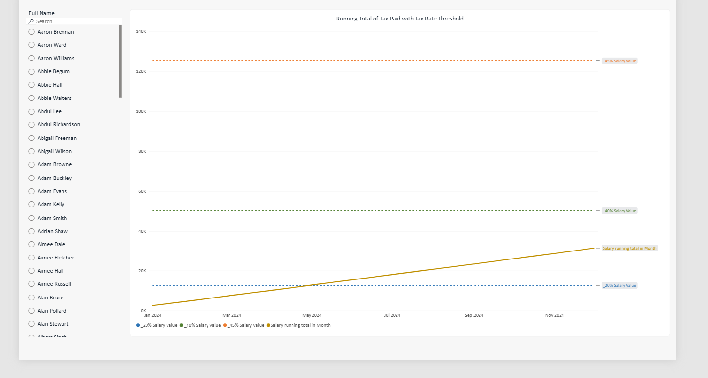

Air Flights Analytics
Summary
Purchase-level flight report built on a single week of Prep Air booking data — 3,778 purchases worth $4.13M in revenue. The model is a star schema (one fact, five dimensions) covering 4 routes; the report surfaces revenue and basket mix by class, meal type, route and time.
Source
| Table | File | Format | Rows | Columns | Description |
|---|---|---|---|---|---|
| PD 2024 Wk 1 Input | PD 2024 Wk 1 Input.csv | CSV, UTF-8 | 3,778 | 4 raw | Weekly flight-purchase extract. One composite column, Flight Details, packs five values delimited // and -: Date // Flight Number // From-To // Class // Price — unpacked in transformation. |
Transformations
Power Query, five steps, no manual data entry.
Flow Card? and Bags Checked → Int64; Meal Type → text.Flight Details split on // into 5 columns, then From-To split on - into From / To.. → , in Price — source uses European-style decimals pre-cast.Date → date, Price → decimal number.Show M code
let
Source = Csv.Document(File.Contents("PD 2024 Wk 1 Input.csv"),
[Delimiter=",", Columns=4, Encoding=65001, QuoteStyle=QuoteStyle.None]),
#"Promoted Headers" = Table.PromoteHeaders(Source, [PromoteAllScalars=true]),
#"Changed Type" = Table.TransformColumnTypes(#"Promoted Headers",
{{"Flight Details", type text}, {"Flow Card?", Int64.Type},
{"Bags Checked", Int64.Type}, {"Meal Type", type text}}),
#"Split Column by Delimiter" = Table.SplitColumn(#"Changed Type", "Flight Details",
Splitter.SplitTextByDelimiter("//", QuoteStyle.Csv),
{"Date", "Flight Number", "From-To", "Class", "Price"}),
#"Split Column by Delimiter1" = Table.SplitColumn(#"Split Column by Delimiter", "From-To",
Splitter.SplitTextByDelimiter("-", QuoteStyle.Csv), {"From", "To"}),
#"Replaced Value" = Table.ReplaceValue(#"Split Column by Delimiter1", ".", ",",
Replacer.ReplaceText, {"Price"}),
#"Changed Type1" = Table.TransformColumnTypes(#"Replaced Value",
{{"Date", type date}, {"Price", type number}})
in
#"Changed Type1"Data model
Star schema — one fact table, five single-direction dimensions, each a deduplicated reference built from the fact itself.

| Fact | Join key | Dimension | Dim key | Cardinality | |
|---|---|---|---|---|---|
| Prep Air's Flow Card | Date | → | DIM_Date | Date | 1:* |
| Prep Air's Flow Card | Class | → | DIM_Class | Class | 1:* |
| Prep Air's Flow Card | Meal Type | → | DIM_Meal Type | Meal Type | 1:* |
| Prep Air's Flow Card | From | → | DIM_From | From | 1:* |
| Prep Air's Flow Card | To | → | DIM_To | To | 1:* |
Every dimension is keyed on the same column it joins (degenerate dimensions extracted from the fact), so each relationship is a plain single-column, single-direction 1:* join — no surrogate or composite keys in this model.
Report
Single page, six slicers, five visuals, two KPI cards.

| Visual | Measure | What it answers |
|---|---|---|
| Pie — Flow Card split | Sum of Price | How much revenue comes from Flow Card members vs. non‑members. |
| Bar — by Class | Sum of Price | Which cabin class generates the most revenue in the week. |
| Bar — by Meal Type | Count of Purchases | Which meal option is most frequently selected at booking. |
| Column — by Year/Qtr/Month | Sum of Price | How revenue is distributed across the calendar drill-down (year → month). |
| Map — by From/To | Sum of Price | Which routes are the highest-earning, viewed geographically. |
| Detail table | Row-level transaction grain | Lets a viewer audit or drill into any single purchase behind the aggregates above. |
Visual design
Custom theme — Clear Data Analytics.json — Calibri throughout, navy/grey corporate palette.
Staff Income Tax
Summary
Workforce income-tax report covering 999 employees and £14.99M of annual tax paid across UK-style 20% / 40% / 45% bands. A monthly salary fact table is joined to a staff master and a month calendar, with a calculated aggregate table pre-computing each employee's annual salary and banded tax paid. Two pages: a workforce overview (banding mix, salary spread, key influencers) and a per-employee running-total view showing when in the year an individual's pay crosses each tax threshold.
Source
| Table | Format | Grain | Key(s) | Description |
|---|---|---|---|---|
| DIM_Staff | CSV import, 25 columns | 1 row / employee | StaffID | Staff master — name, DOB, hire date, department, job title/level, manager, office/home country, tax region & code, employment type, FTE, contract type, work pattern, student loan plan, pension sacrifice %. |
| Salaries Raw | CSV import, unpivoted from wide (13 cols) | 1 row / employee / month | StaffID, Month | Monthly salary. Source file ships one column per month; unpivoted into long Month / Salary pairs. |
| DIM_Month | Derived (no file) | 1 row / calendar month | Month | Distinct Month values lifted straight out of Salaries Raw — a calendar lookup, not a separate extract. |
| Salaries Aggregated | Calculated table (grouped) | 1 row / employee | StaffID | Salaries Raw grouped by StaffID into annual/min/max/avg/median salary, then extended with DAX columns banding that salary into 20%/40%/45% tax paid. |
Transformations
Power Query builds the three import tables; the aggregate table layers DAX tax-banding logic on top.
DIM_Staff
JobLevel (e.g. "L7") and cast to Int64 as numeric Job Level.Age and Years of Experience = (today − DateOfBirth / HireDate), converted from a duration to years (days ÷ 365).Salaries Raw
StaffID into Month / Salary pairs.1/<n>/2024 and parse to a proper date; type Salary as decimal.Salaries Aggregated
Show Power Query M (Salaries Raw)
let
Source = Csv.Document(File.Contents("PD 2024 Wk 6 Input.csv"),
[Delimiter=",", Columns=13, Encoding=1250, QuoteStyle=QuoteStyle.None]),
#"Promoted Headers" = Table.PromoteHeaders(Source, [PromoteAllScalars=true]),
#"Unpivoted Other Columns" = Table.UnpivotOtherColumns(#"Promoted Headers",
{"StaffID"}, "Month", "Salary"),
#"Changed Type" = Table.TransformColumnTypes(#"Unpivoted Other Columns", {{"Salary", type number}}),
#"Added Prefix" = Table.TransformColumns(#"Changed Type", {{"Month", each "1/" & _, type text}}),
#"Added Suffix" = Table.TransformColumns(#"Added Prefix", {{"Month", each _ & "/2024", type text}}),
#"Changed Type1" = Table.TransformColumnTypes(#"Added Suffix", {{"Month", type date}})
in
#"Changed Type1"Tax-banding and the running total are DAX, not Power Query — see section 04.
DAX measures
All tax-banding logic lives in calculated columns on Salaries Aggregated; the running total on page 2 is a measure on Salaries Raw.
| Name | Table | Type | Purpose |
|---|---|---|---|
| _20% / _40% / _45% Salary Value | Salaries Aggregated | Measure | Fixed UK band thresholds — £12,570 / £50,270 / £125,140 — referenced by every other formula below and plotted as the dashed lines on page 2. |
| _Maximum Tax Rate as Number | Salaries Aggregated | Calc. column | Tiers each employee's Annual Salary against the three thresholds to get their top marginal rate (0 / 0.2 / 0.4 / 0.45) — drives the slicer and the stacked bar's row grouping. |
| _Maximum Tax Rate | Salaries Aggregated | Calc. column | Text version of the rate above (e.g. "40% rate") used as the bar chart's legend/axis label. |
| _20% / _40% / _45% Tax Paid | Salaries Aggregated | Calc. columns | Tiered tax within each band — each only taxes the slice of salary above its own threshold, so they sum correctly instead of double-taxing. |
| _Annual Tax Paid | Salaries Aggregated | Calc. column | Sum of the three band amounts — feeds the "Sum of Tax Paid" KPI card. |
| Salary running total in Month | Salaries Raw | Measure | Cumulative SUM of Salary up to the selected Month (ALLSELECTED + ISONORAFTER) — the line plotted against the three thresholds on page 2. |
Show full DAX
_20% Salary Value = 12570
_40% Salary Value = 50270
_45% Salary Value = 125140
_Maximum Tax Rate as Number =
SWITCH( TRUE(),
[Annual Salary] <= [_20% Salary Value], 0,
[Annual Salary] <= [_40% Salary Value], 0.2,
[Annual Salary] <= [_45% Salary Value], 0.4,
0.45 )
_Maximum Tax Rate =
CONVERT( [_Maximum Tax Rate as Number] * 100, STRING ) & "% rate"
_20% Tax Paid = IF([_Maximum Tax Rate as Number] > 0, 0.2 * [Annual Salary], 0)
_40% Tax Paid = IF([_Maximum Tax Rate as Number] > 0.2, 0.4 * ([Annual Salary] - [_20% Salary Value]), 0)
_45% Tax Paid = IF([_Maximum Tax Rate as Number] > 0.4, 0.45 * ([Annual Salary] - ([_20% Salary Value] + [_40% Salary Value])), 0)
_Annual Tax Paid = [_20% Tax Paid] + [_40% Tax Paid] + [_45% Tax Paid]
Salary running total in Month =
CALCULATE(
SUM('Salaries Raw'[Salary]),
FILTER(
ALLSELECTED('Salaries Raw'[Month]),
ISONORAFTER('Salaries Raw'[Month], MAX('Salaries Raw'[Month]), DESC)
)
)Data model
One fact (Salaries Raw) feeding a calendar and a per-employee aggregate, which in turn ties back to the staff master — StaffID is the join key everywhere except the calendar link.

| From | Key | To | Key | Cardinality | Cross-filter | |
|---|---|---|---|---|---|---|
| Salaries Raw | Month | → | DIM_Month | Month | *:1 | Single |
| Salaries Raw | StaffID | → | Salaries Aggregated | StaffID | *:1 | Single |
| Salaries Aggregated | StaffID | ⇄ | DIM_Staff | StaffID | 1:1 | Both |
The Aggregated↔DIM_Staff link is the one deliberately bidirectional relationship in the model: it lets staff attributes (Department, JobLevel, JobTitle, OfficeCountry…) filter the pre-computed tax figures, and lets a tax-band selection filter back onto the staff list — both directions are used by the slicers on the report's first page.
Report
Two pages — a workforce overview and a per-employee drill-down.
Page 1 · Income Tax Data

| Visual | Measure | Interpretation |
|---|---|---|
| KPI — Number of Employees | Distinct count of StaffID | Headcount in the current filter context (999 at page level). |
| KPI — Sum of Tax Paid | _Annual Tax Paid | Total tax collected across the workforce (£14.99M at page level). |
| Stacked bar — Count of StaffID by _Maximum Tax Rate & JobLevel | Count of StaffID | Most of the workforce sits in the 20% and 40% bands; the 45% band is a thin slice, concentrated in the higher job levels (L5–L7) — the 0% band is almost empty, meaning very few staff earn under the personal allowance. |
| Key influencers — "What influences Annual Salary to increase" | Annual Salary | Job title is the dominant driver of pay: Station Manager (+£46.9K), Cabin Crew Manager (+£44.4K) and Cabin Service Lead (+£21.0K) each push the average salary up substantially — leadership/management titles carry the clearest premium. |
| Box plot — Salary Distribution by Job Level | Annual Salary (min/med/mean/max) | Spread widens sharply going up the ladder: L1–L3 cluster tightly at the low end, while L6–L7 show much higher medians and by far the widest range — consistent with senior/exec pay being individually negotiated rather than banded. |
| Detail table | Row-level salary & tax by employee | Lets a viewer trace any KPI or chart back to the individual pay and tax figures behind it. |
Page 2 · Running Total per Employee

| Visual | Measure | Interpretation |
|---|---|---|
| Line — Salary running total in Month | Salary running total in Month (cumulative SUM over Salaries Raw[Month]) | A personal tax-band tracker: the running line shows cumulative pay through the year, read against the three dashed reference lines (_20%/_40%/_45% Salary Value = £12,570 / £50,270 / £125,140) to see in which month that individual's pay crosses into the next tax band. |
| Full Name slicer (search list) | — | Required to make the running total meaningful — the measure is cumulative per person, so the page is designed to be viewed one employee at a time rather than for the whole workforce at once. |
Visual design
No custom theme file — report uses Power BI's default theme and categorical palette, relied on mainly to colour-code the JobLevel series (L1–L7) consistently across the stacked bar and box plot.